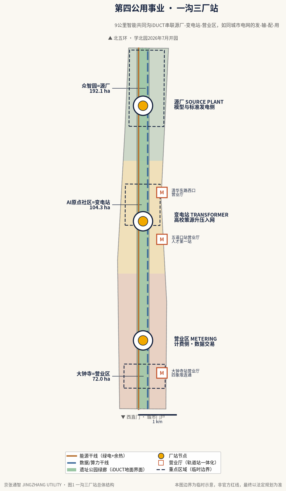
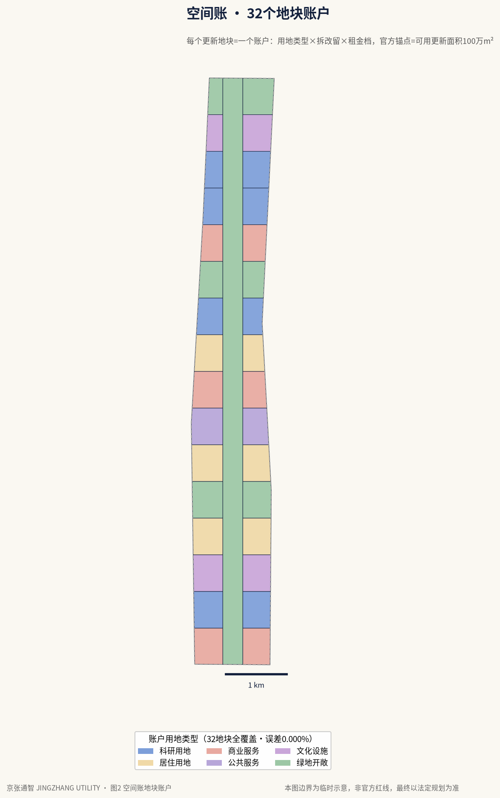
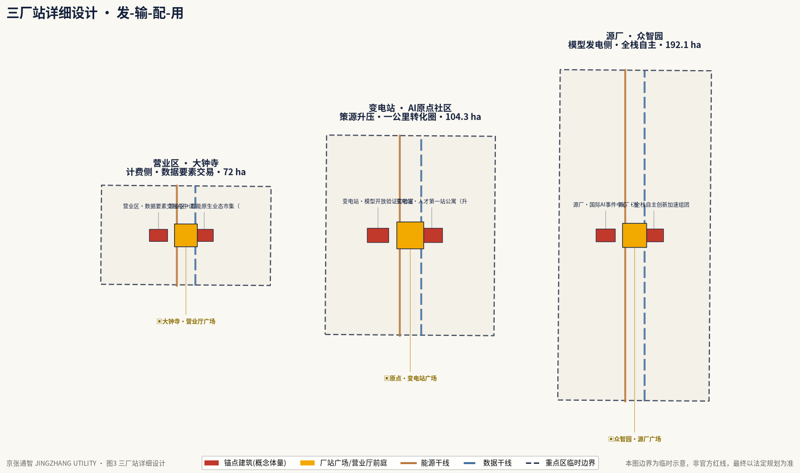
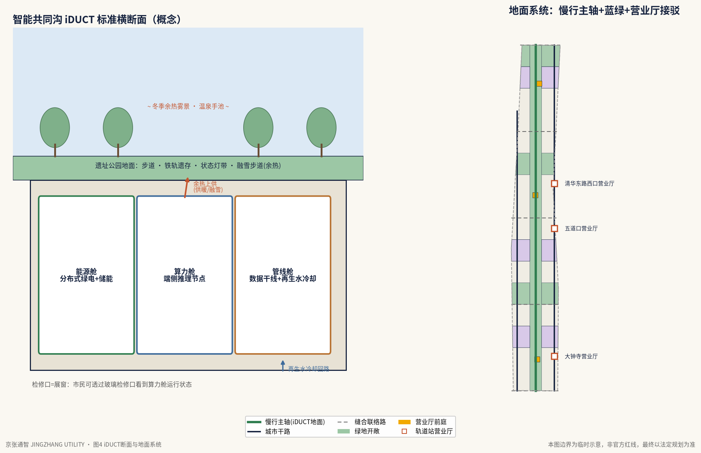
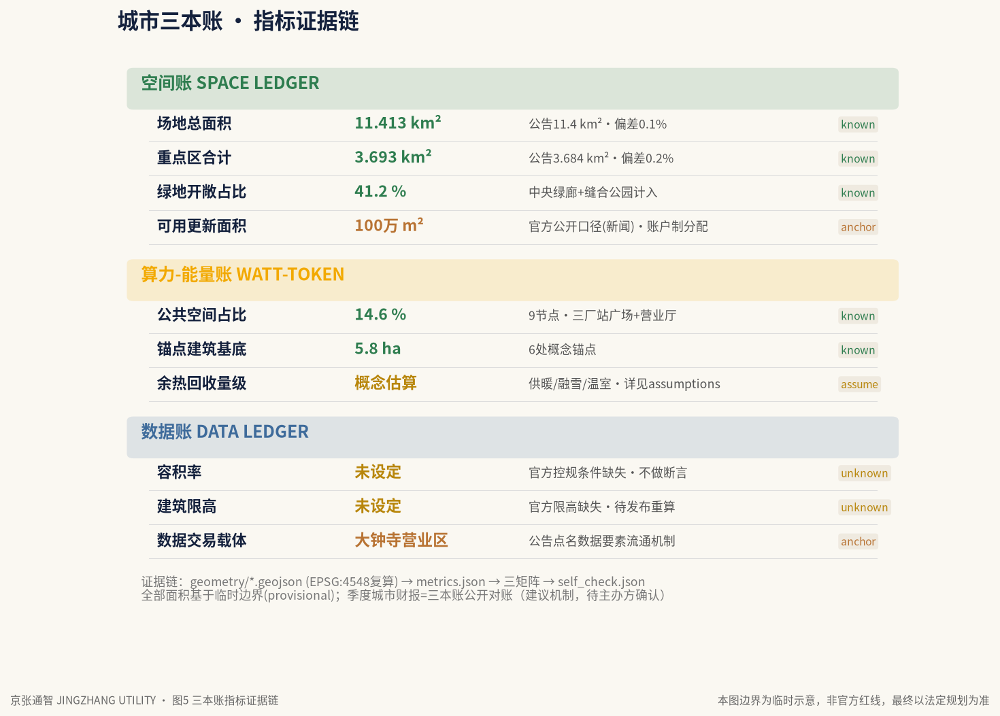

一百年前，城市因为把水、电、气、暖变成入户的公用事业而现代化。今天，各行各业都在全面拥抱 AI——但接入方式仍像 1900 年的电力：各自发电、重复建设、互不联网。我们沿 9 公里京张遗址公园，把智能接入城市管网——建成第四公用事业：拧开就有、按量计费、人人可用、普遍服务。
1909 年，京张铁路在此通车——中国第一条自主设计运营的公共基础设施级铁路。从铁路（运人），到管线（运能），到通智（运算智能）：公用事业化，是这座城市现代化的重复模式。[source: beijing.gov 2026-03]
总览地图 · 数字孪生调度视图
下图为 11.4 km² 带状场地的交互孪生底盘（北在左、南在右）。勾选图层开关叠加用地、蓝绿、道路与实施时序；悬停 32 个地块账户查看名称与公顷数；点击三个厂站片区虚线框，调出片区档案。
三层范围
公告确立三层嵌套范围：43.6 km² 研究范围（三区两翼整体协同）→ 11.4 km² 场地范围（本展板孪生底盘，我方几何 11.413 km²）→ 368.4 ha 重点片区（我方几何 3.693 km²，偏差 0.2%）。[source: ghzrzyw 2026-05-09]

用地分区 · 32 个地块账户
公用事业区别于实验田的本质，是可计量、可结算。空间账 SPACE LEDGER 为 11.4 km² 内每个更新地块建立"账户"：用地代码、公顷数、拆改留类别、容积转移额度与租金梯度都记在账上。上方孪生地图的"用地分区"图层即 32 账户的空间落位——中央 320.4 ha 绿廊（京张遗址公园-AI 实验线）为最大公共账户。
账户规则（空间账摘要）
- 拆改留三类：每账户标注处置策略，与遗址公园二期"融/拆/退/补"四策略衔接。[source: bjhd 2025-03]
- 容积转移：绿廊让渡的容积计入邻侧账户，转移量入账可查。
- 租金梯度：源厂低租长约孵化 → 营业区市场租金反哺，价差进普遍服务基金。
- 官方锚点：一带可用更新面积 100 万 m²，产业空间近千万 m²。[source: 京报/kw 2026-04]
用地代码构成（我方方案）

智能共同沟 iDUCT · 互动剖面
绿廊地下的一条"会思考的管沟"：分布式能源、端侧算力舱、数据干线与再生水冷却，同传统三大市政设施融合敷设（呼应公告"探索分布式能源、端侧算力等 AI 产业新型服务设施与传统三大设施的融合发展模式"）。地面是公园；检修口、余热景观与算力状态灯带是它的可感知公共界面——市民能看见城市在思考。悬停各舱室查看说明，按右侧按钮切换昼夜。
三厂站档案（重点区域详细设计） · 蓝绿公共空间
电从电厂出发、经变电站升压、到营业厅计费入户。智能沿同一条链路组织城市：源厂（众智园 192.1 ha）→ 变电站（AI 原点社区 104.3 ha）→ 营业区（大钟寺 72.0 ha），由 9 公里绿廊 iDUCT 串联，两侧是中关村科技服务翼与小月河场景赋能翼。[source: ghzrzyw 2026-05-09]
北 · 源厂 SOURCE PLANT
- 模型与标准的"发电侧"，全栈自主创新
- 锚点：学北园 23.83 万 m²，2026 年 7 月开园，国家自然科学基金委已签约 [source: 京报/kw 2026-04]
- 国际 AI 事件中心 = 发布与对账大厅
中 · 变电站 TRANSFORMER
- 高校策源"升压入网"：37 所高校 / 52 全国重点实验室 / 1.23 万 AI 学者
- 锚点：原点大厦（2026-03 更名）、清华 AI 学院 F 座、星光大道；439 家入驻企业（AI 企业 325 家）[source: beijing.gov 2026-04]
- 首批 AI 创新街区，"全球 AI 人才创新创业第一站"
南 · 营业区 METERING & MARKET
- 智能经济计费侧 + 数据要素交易所
- 公告点名"探索数据要素与数字资产流通机制"
- 大钟寺站四象限步行连通（公告硬任务）
蓝绿公共空间
绿地开敞空间占比 41.2%，公共空间占比 14.6%（我方几何）。中央绿廊即遗址公园二期 53.09 万 m²（西直门—北五环 9 km，京张水韵、社区活力、京张遗址纪念、青年国际交往、自然休闲五组团，2026 年底全线贯通；一期 2.4 km / 16.8 ha 已于 2023 年 6 月开放）。东翼衔接清河、小月河蓝绿廊道，滨水绿地账户（LU-04 小月河场景翼、LU-10 学院路缝合公园、LU-15 北五环生态界面）承担雨洪调蓄与 iDUCT 再生水冷却取水。余热回收让蓝绿空间冬天也"发热"：温泉雾湿地、融雪步道、恒温泳池——公用事业的废热成为公园的体感福利。[source: bjhd 2025-03]


城市三本账 · 运行仪表盘
公用事业必须可计量、可结算、有普遍服务义务。京张通智用三本账把 11.4 km² 记成一张城市报表，每季度公开对账——城市财报发布会，就开在源厂的发布与对账大厅。下方读数为进入视口自动跑表的概念演示数值。
空间账 SPACE LEDGER
- 拆改留三类 + 容积转移台账
- 租金梯度：源厂低租孵化 ↔ 营业区市场租金反哺
- 输出：控规深度的更新实施项目清单
算力-能量账 WATT-TOKEN LEDGER
- 绿电供给 → 算力消耗 → 余热回收闭环入账
- 接北京算力券 / 模型券政策（2026-01 推进会）
- 余热去向：泳池 / 温室 / 融雪步道
数据账 DATA LEDGER
- 载体：大钟寺数据要素交易空间
- 分级数据门：按敏感度放行
- 呼应公告"数据要素与数字资产流通机制"
瓦特-TOKEN 联单 · 实时换算台 概念演示 · 假想数值
拖动滑块，看一度电在京张通智里能变成什么。换算系数为示意假设，不代表任何实测或官方数据。
更新项目
空间账的直接产出，是一份可滚动实施的更新项目清单（控规深度要求）。一带可用更新面积约 100 万 m²、产业空间近千万 m² [source: 京报/kw 2026-04]。清单示例（节选，实施主体与规模以账户台账为准）：

通智入户 · AI 场景与普遍服务
电网必须给每家通电；智能公用事业必须服务老人、小店、学校、居民。十项"通智入户"服务，每项都有服务标准、资费逻辑与豁免条款。点击卡片翻面，看每项服务背后的市民场景。
资费三档 · 月费模拟器 概念演示 · 假想数值
普惠档（免费，普遍服务基金覆盖）／ 标准档（按量计费）／ 产业档（市场价，交叉补贴普惠档）。选择用户类型并拖动月用量，查看适用档位。资费数值纯属示意。
政策接口：模型券、算力券、超千亿基金、OPC 一人公司、海淀 Skill 开源技能包均为官方已发布政策工具 [source: 京报/kw 2026-04 · kw 2026-01]；AI 面试舱、原点熊陪伴终端、AI 哨兵/保洁机器人/煎饼机器人为一带已落地案例 [source: beijing.gov 2026-03/04]。
营业厅 · 轨道站一体化
供电有营业厅，通智也有：办理（接入/资费/账单）、体验（十项服务样板间）、申诉（算法决定复核窗口）。三个营业厅直接叠建在 13 号线车站上——一站对一厂。公告点名大钟寺站"四象限步行连通"与五道口、清华东路西口站城一体化，本方案将其升级为公用事业界面。[source: ghzrzyw 2026-05-09]
大钟寺站 · 四象限连通点击象限
三厅分工
大钟寺站营业厅 METERING HALL
- 四象限地下步行环 + 800 泊位螺旋非机动车库（概念）
- 主营业大厅：资费办理、账单查询、算法申诉窗口
- 叠建于换乘节点，容积转移池落位四象限上盖
五道口站营业厅 FIRST-STOP HALL
- "全球 AI 人才创新创业第一站"实体前台 [source: kw 2026-01]
- OPC 一人公司注册 + 模型券算力券核销一窗办理
- 接驳原点大厦一公里转化圈
清华东路西口站营业厅 CAMPUS-SEAM HALL
- 校区-园区慢行缝合：跨墙连廊双侧开门
- 学生普惠档接入点：校园卡即通智卡（概念）
- 衔接学北园 2026 年 7 月开园客流
自检状态 · 任务覆盖 · 假设
整包通过仓库校验管线：deterministic 校验、空间审查、展板检查、专业证据审查。三本账的第一笔账，是先把自己的账算清楚。
自检状态
| 校验环节 | 结果 |
|---|---|
| Deterministic validation（结构/哈希/矩阵） | PASS |
| Spatial review（几何拓扑/坐标系） | PASS |
| Visual packaging check（离线/零外链） | PASS |
| Professional evidence review（证据链） | PASS |
| KEY_AREA_PROVISIONAL × 3 | 预期提示（临时边界） |
| 任务覆盖（公告 1.3/1.4/1.5 + agent.1-6） | compliance_matrix.json 全登记 |
| 来源与证据（sources.json 18 条） | 正文 [source:] 标记对应 |
指标核验：场地 11.413 km²（公告 11.4，偏差 0.1%）· 重点区 3.693 km²（公告 3.684，偏差 0.2%）· EPSG:4548 独立复算，证据链 geometry → metrics → 三矩阵 → self_check。
假设
| 编号 | 假设内容 |
|---|---|
| A-BOUNDARY-001 | 全部几何基于临时边界 PROV-SITE-001，官方红线发布后整包重算 |
| A-ROADS-001 | 道路走向为公开地图近似，非红线 |
| A-ANCHOR-001 | 锚点建筑为概念体量，非建筑设计 |
| A-HEAT-001 | 余热回收量级为概念估算，未经工程热力学核算 |
| A-TARIFF-001 | 资费三档与交叉补贴为建议机制，待主办方确认 |
FAR 与限高因官方控规条件缺失标注 unknown，概念阶段不予断言。所有"京张通智公司 SPV""普遍服务基金""城市财报"均为建议机制，待主办方确认。